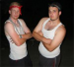
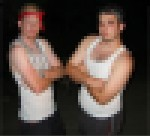
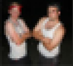
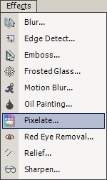

Pixelate Effect
 The Pixelate Effect (Effects-->Pixelate) is similar to a blur but uses square-like pixelateion. As with the Blur Effect, this effect also allows the user to select how intense they would like to effect to be on the current layer (or active selection region). |
An image altered by the Pixelate Effect:
| |
 |
| Pixelate Image | Pixelate Setting Of 3 |
|  |
 |
| Pixelate Setting Of 6 | Pixelate Setting Of 9 |